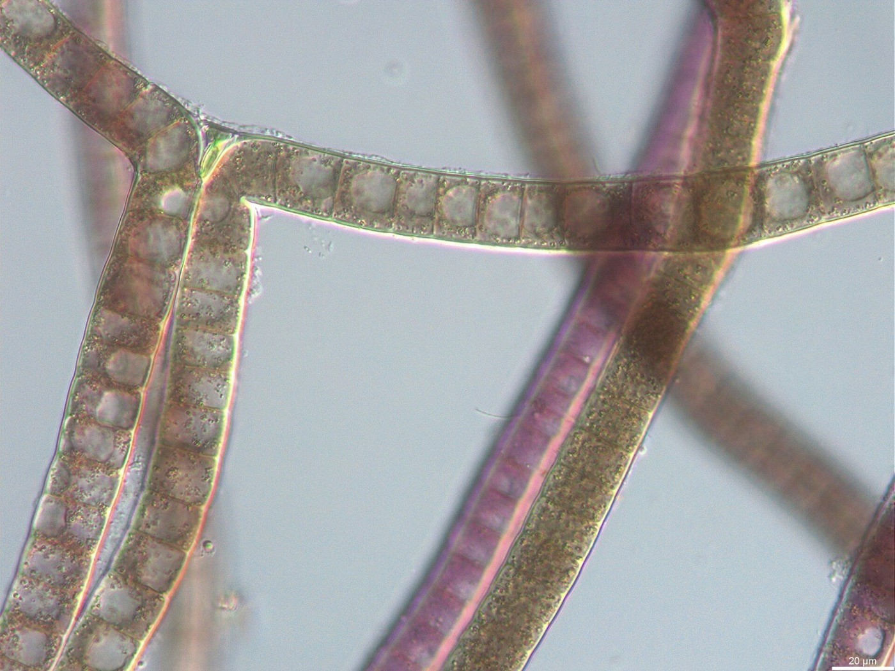
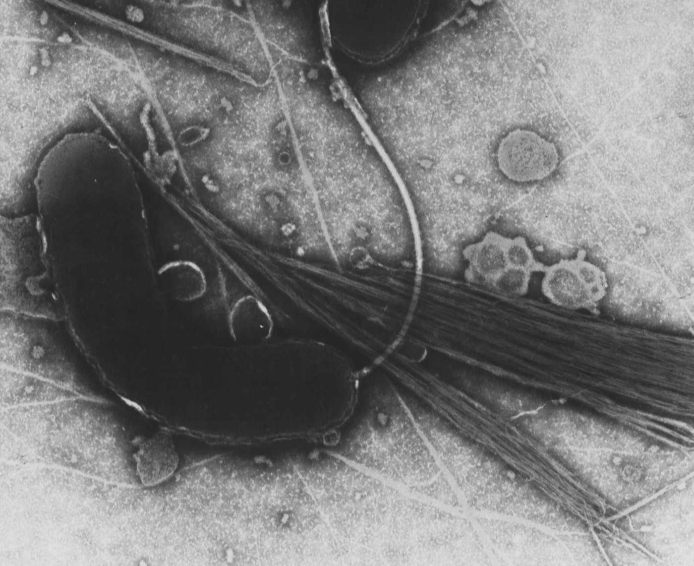
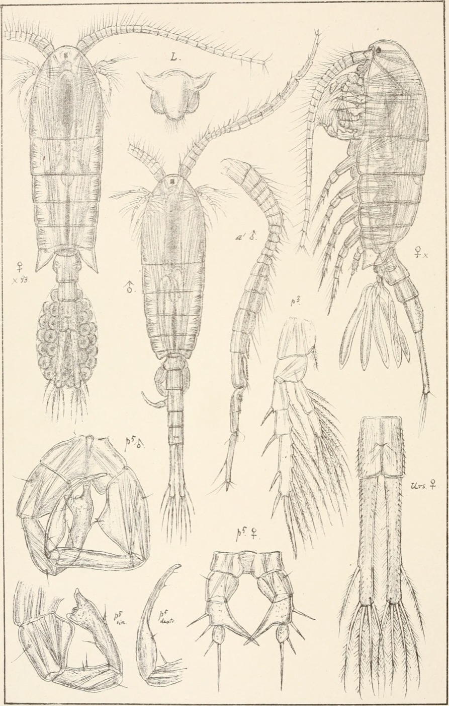
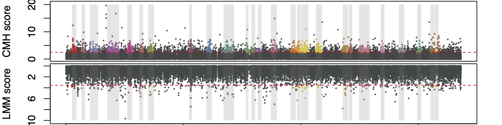

Research
A toxin gene in a bloom   
Biosurveillance and bioforensics
I lead bioinformatics research for bioforensic investigations at NBACC. The questions are practical: what is in this sample, down to species and strain, and does its genome carry signs of genetic engineering, virulence or antibiotic resistance?
To answer them I design hybridization capture probe sets, including long-fragment enrichment for long-read sequencing, and build the pipelines that analyse what they catch: phylogenetic identification and population genetics from complex samples, whole-genome phylogenetics at scale, and detection of trace organisms. Newer work brings protein language models and genomic foundation models into the same questions. Much of this work supports U.S. biodefense and is not publicly released.
Mechanisms of repeated evolution
Convergent and parallel evolution is among the strongest evidence for the power of natural selection, yet the mechanisms that promote repeated evolution remain poorly understood. Using evolve-and-resequence experiments, comparative genomics and computational approaches, I study the genomic basis of parallel adaptation in macro- and microorganisms: how balancing selection and epistasis promote parallel genomic responses, and how cave-adapted animals repeatedly lose complex traits like vision.
Recent work asks how genome architecture shapes the repeatability of polygenic adaptation. The goal is to uncover general mechanisms of adaptation, so that evolution in changing environments can be predicted.

Study systems
- Bioinformatics tools
- Microbes
- Invasive copepods
- Cave crayfish
Software and current projects
My team builds pipelines and methods, mostly in Python and Snakemake for Illumina, Oxford Nanopore and PacBio data, toward three goals. Most of it supports U.S. biodefense and is released only once it clears peer review and institutional approval; public code is on GitHub.
-
Trace pathogen detection in complex samples
Finding and naming an organism present as a handful of reads among millions. I design hybridization capture probe sets, including long-fragment enrichment for long-read sequencing, and the pipelines that place what they catch on a phylogeny to identify it down to species and strain.
-
Detecting genetic engineering in genomes
Telling an engineered genome from a natural one: signatures of genetic engineering, acquired virulence and antibiotic resistance genes, and stretches of sequence that do not fit their genomic background, flagged with genomic foundation models such as Evo2.
-
AI for biology
Protein language models and structure prediction for building phylogenies from protein structure, simulations that give those methods a known true tree, and benchmarks that test whether AI agents can carry out pathogen genomic surveillance.
Selected publications
Full list on Google ScholarFifteen papers and preprints in four threads.
About
David B. Stern works where evolutionary genetics meets biosecurity, reading how genomes change in order to detect, characterise and trace biological threats.
He is Principal Investigator in Bioinformatics at the National Biodefense Analysis and Countermeasures Center (NBACC), where he leads a team of analysts and software engineers, and a Lecturer in Biostatistics and Bioinformatics at the George Washington University. Before NBACC he was a computational biologist in the NIAID Bioinformatics and Computational Biosciences Branch, building viral genomics workflows, and an NIH/NHGRI Genome Sciences Training Program fellow in the Lee Lab at the University of Wisconsin–Madison. He earned his PhD in Biological Sciences with Keith Crandall at the George Washington University Computational Biology Institute.
He has taught graduate courses in research analytics at GWU and in population genomics for the NIAID African Centers of Excellence in Bioinformatics in Mali and Uganda, and has mentored twelve student research projects.
- NowPrincipal Investigator, Bioinformatics, NBACC
- TeachingLecturer, GWU Biostatistics and Bioinformatics
- TrainedPhD, GWU; postdoc, UW–Madison
Get in touch
For collaborations, data, talks or students.
- dstern7760@gmail.com
- Scholar
- Google Scholar
- Code
- github.com/TheDBStern
- david-b-stern
- X
- @thedbstern
The Baltic Sea at Rerik, Germany. Baltic copepods are at the centre of my work on parallel adaptation.